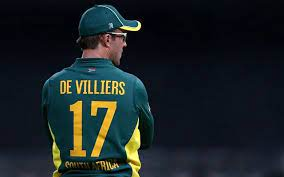

Bio pic of ABD
Name: ABD VILLERS
God of Cricket
About the legend
Abraham Benjamin de Villiers (born 17 February 1984) is a South African former international cricketer, and a current commentator. AB de Villiers was named as the ICC ODI Player of the Year[2] three times during his 15-year international career and was one of the five Wisden cricketers of the decade at the end of 2019.[3] He is regarded as one of the greatest cricketers in the history of the sport and as one of the best batsmen of his era.[4][5] de Villiers began his international career as a wicket-keeper-batsman, but he has played most often solely as a batsman. He batted at various positions in the batting order, but predominantly in the middle-order. Regarded as one of the most innovative and destructive batsmen in the modern era, de Villiers is known for a range of unorthodox shots, particularly behind the wicket-keeper.[6] He made his international debut in a Test match against England in 2004 and first played a One Day International (ODI) in early 2005. His debut in Twenty20 International cricket came in 2006. He scored over 8,000 runs in both Test and ODI cricket and is one of the very few batsmen to have a batting average of over fifty in both forms of the game.[7] In limited overs cricket, he is an attacking player.[8] He holds the record for the fastest ODI fifty(16 balls), fastest ODI century(31 balls), and fastest ODI 150(62 balls). De Villiers captained South Africa in all three formats, although after a series of injuries, he stepped down from the Test captaincy. In 2017, he stepped down from captaining the national limited-overs games[9] and in May 2018, he announced his retirement from all forms of international cricket.[10][11][12] In January 2020, however, de Villiers expressed an interest in making an international comeback and play in the 2020 T20 World Cup,[13] although later in the year it was confirmed that he would not do so.[14][15][16] On 19 November 2021, de Villiers announced his retirement from all forms of cricket.[17] Early life Abraham Benjamin de Villiers was born on 17 February 1984 in Warmbad (modern day Bela-Bela), South Africa to Abraham B de Villiers and Millie de Villiers. He has two elder brothers Jan de Villiers and Wessels de Villiers.[18] He described his childhood days as "really relaxed lifestyle up there, where everyone knows everyone".[19] He was educated at Afrikaanse Hoër Seunskool in Pretoria along with teammate Faf du Plessis, who was and still remains his good friend. He is a high school graduate. His father was a doctor who had played rugby union in his youth, and he encouraged his son to play sports as a child.[19] Career De Villiers is a right-handed batter who accumulated 8765 runs in Tests including 22 centuries and 46 fifties. He holds the record for most Test innings without registering a duck (78),[20] before being dismissed for nought against Bangladesh in November 2008. He also holds the second-highest individual score by a South African batsman, with an unbeaten 278. Until 2012 he was an occasional wicket-keeper for South Africa, although after the retirement of regular Test keeper Mark Boucher and under his own captaincy he has started to regularly keep wicket for the national side in Tests, ODIs and T20Is. He gave up wicket-keeping in 2015 and handed the gloves to debutant Quinton de Kock. He holds the records for the fastest 50 (16 balls), 100 (31 balls) and 150 (64 balls) of all time in One Day Internationals by any batsmen, and also holds the fastest hundred by a South African in Tests and the fastest 50 by South African in T20Is. He is a three-time ICC ODI player of the year, winning the award in 2010, 2014 and 2015. After the 2011 Cricket World Cup he succeeded Graeme Smith as captain of the national ODI side,[21] and became Test captain after the second Test of the home series against England in 2015/16.[22] He stepped down from Test captaincy in December 2016 due to an elbow injury which kept him out of the team for a long period.[23]
For more information check out wikipedia click below botton